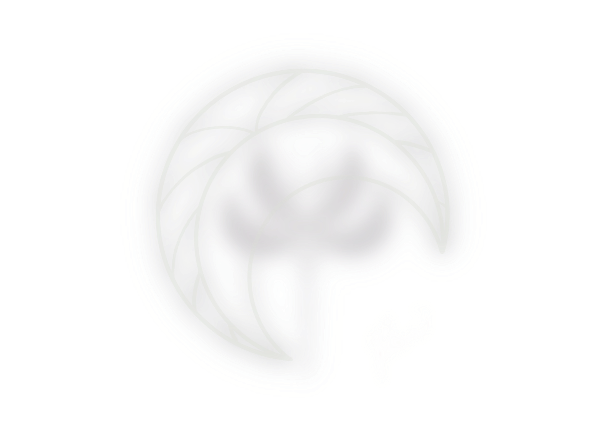

Welcome to Structure
I stored memories —With emotions,
by building a system,
in a game,
through the placement
of clusters of poems
on a logical map.
And... Instagram is the joystick, this time.
Open Zone
What’s the truth, Which is the answer
Where you stand, How you see.
Every moment counted, and it’s created by yourself.
Where you stand, How you see.
Every moment counted, and it’s created by yourself.
Narrative Topology Mapping, Modular Narrative Architecture,
Structural Semiotic Grid, Cognitive Pathway Simulation …
Phase 1 Complete.
Constellations align.
stars are going to return.